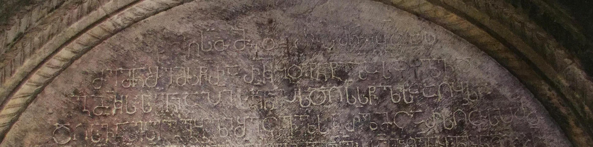

საფარის წმ. საბას ტაძრის ოქროპირ გაბეცასძის წარწერა
შინაარსი / Summary
შემომწირველთა
ბიბლიოგრაფია Bibliography
კრიტიკული გამოცემა Interpretive Edition
ს(ა)ხ(ელი)თ(ა) ღ(მრთი)ს(აჲ)თ(ა) მე ოქრ(ო)პ(ირ)მ(ა)ნ გ(ა)ბ(ე)ცას
ძემ(ა)ნ შემ(ო)სწ(ი)რა რკ ბოტ(ი)ნ(ა)ტი ზ(ედ)ას(ა)ფ(ი)ქლ(ა)ვ(ა)დ
გ(ა)მ(ი)კ(უეთ)ს ს(აუ)კ(უ)ნ(ო)ი ა(ღა)პი ს(აუ)ფლ(ო)ი პ(ირველ)ს დღ(ე)(ა)სწ(აუ)ლსა აღ(ე)ბ(ა)სა
დღ(ე)ს(ა) ვ(ი)ნ ეს გ(ან)გ(ე)ბ(უ)ლი შეცვ(ა)ლ(ო)ს კრ(უ)ლ(ი)მც არს ღ(მრ)თ(ი)ს პ(ი)რ(ი)თ
დიპლომატიური გამოცემა Diplomatic Edition
ႱႾႧ ႶႱႧ ႫႤ ႭႵႰႮႫႬ ႢႡႺႠႱ
ႻႤႫႬ ႸႤႫႱႼႰႠ ႰႩ ႡႭႲႬႲႨ ႦႠႱႴႵႪႥႣ
ႢႫႩႱ ႱႩႬႨ ႠႮႨ ႱႴႪႨ ႮႱ ႣႶႱႼႪႱႠ ႠႶႡႱႠ
ႣႶႱ ႥႬ ႤႱ ႢႢႡႪႨ ႸႤႺႥႪႱ ႩႰႪႫႺ ႠႰႱ ႶႧႱ ႮႰႧ

საფარის წმ. საბას ტაძრის ოქროპირ გაბეცასძის წარწერა
{'ka': 'ღმრთის სახელით, მე, ოქროპირ გაბეცასძემ, შევწირე 120 ბოტინატი ეკლესიის გადასახურად (დასაფიქალავად).\n დამიდგენია საუკუნო აღაპი: პირველი საუფლო დღესასწაულის (შობის)\n აღების დღეს. ვინც ეს განგებულება შეცვალოს, კრულ იყოს ღმრთის პირით.'}
{'default': 'საფარის მონასტერი ძველი დროიდანვე სხვადასხვა დანიშნულების 12 ნაგებობისაგან შედგებოდა. მათ შორის მთავარია წმ. საბას\n სახელობის ტაძარი, აგებული ბექა სამცხის სპასალარისა და მანდატურთუხუცესის მიერ XIII-XIV სს. მიჯნაზე. საფარაში ამაზე ძველი ეკლესიაც არსებობს, X ს-ის\n ღვთისმშობლის მიძინების სახელობის ტაძარი, რომელსაც ჩრდილოეთიდან მიდგმული აქვს ზემოხსენებული წმ. საბას ტაძარი.\n საფარის წმ. საბას ტაძრის დასავლეთის შესასვლელის დიდი ზომის არქიტრავზე ქვემოდან ზემოთ\n ერთმანეთის თანმიმდევრობით ამოკვეთილია სამი წარწერა-საბუთი. ზემოდან პირველი წარწერა არის ოქროპირ გაბეცასძის მიერ ეკლესიის\n ქვის ფილებით გადასახურად 120 ბოტინატის შეწირვის შესახებ, მეორე - იოვანე ღვიას შვილის წარწერა, ხოლო მესამე - გიორგი მალეს წარწერა კარის შეწირვის შესახებ.\n წარწერის მიხედვით, ოქროპირ გაბეცაძისთვის ამ შეწირულობის სანაცვლოდ საუკუნო აღაპი დაუდგენიათ „საუფლოი პირველს დღესასწაულსა აღებასა დღესა“. პირველი საუფლო\n დღესასწაული შობაა და ამ დღესასწაულის აღების, ე.ი. მარხვის დამთავრების დღეა დადგენილი გაბეცაძის აღაპად. ტექსტის სიტყვა „განგებულთან“(გგბლი) დაკავშრებით\n ვახტანგ ბერიძე შენიშნავს: იგი „თაყაიშვილს ამოშფრული აქვს, როგორც „გაგებული“, მაგრამ კონტექსტი, ჩვენი აზრით, „გარიგებულს“ მოითხოვს\n (ვახტანგ ბერიძე, სამცხის ხუროთმოძღვრება, XIII-XVI საუკუნეები, თბ. 1955, 52). ვალერი სილოგავას აზრით, აქ უნდა წავიკითხოთ „განგებული“ (ე.ი.\n დადგენილი, დაწესებული), რაც ჩვეულებრივია აღაპის გაჩენის შემთხვევაში. თუმცა ერთ ადგილას თვით აღაპების ტექსტში გამოყენებულია „გაგებული“:\n „ვინცა ესე ჩუენი გაგებული შეცვალოს“ (ნ. ბერძენიშვილი, ათონის ივერთა მონასტრის აღაპები, თბ., 2007, 265; ე. მეტრეველი, ათონის ქართველთა მონასტრის\n სააღაპე წიგნი, თბ., 1998, 176). ამიტომ ე. თაყაიშვილისეული წაკითხვა და მოსაზრება უფრო სწორი ჩანს.'}
<div type="edition" xml:lang="ka" ana="mtavruli" xml:space="preserve">
<ab>
<lb n="1"/><w lemma="ქრისტე"><expan><abbr>ქ</abbr><ex>რისტ</ex><abbr>ე</abbr></expan></w>
<w lemma="განსუენება"><expan><abbr>გა</abbr><ex>ნ</ex><abbr>ო</abbr><ex>ჳ</ex><abbr>ს</abbr><ex>უ</ex><abbr>ენე</abbr></expan></w>
<w lemma="სულ">სოჳ<lb n="2" break="no"/>ლსა</w>
<name nymRef="ვაჩა">ვაჩაჲს<lb n="3" break="no"/>ასა</name>
<name nymRef="გურა"><expan><abbr>გო</abbr><ex>ჳ</ex><abbr>რაჲ<lb n="4" break="no"/>სასა</abbr></expan></name>
<name nymRef="მირა"><expan><abbr>მ</abbr><ex>ი</ex><abbr>რა</abbr><ex>ჲ</ex><abbr>ს</abbr><ex>ა</ex><abbr>ს</abbr><ex>ა</ex></expan></name>
</ab>
</div>